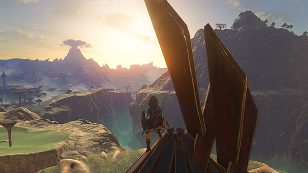
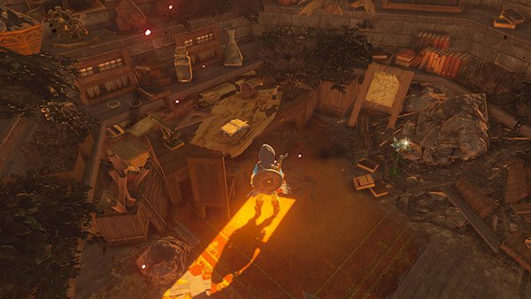
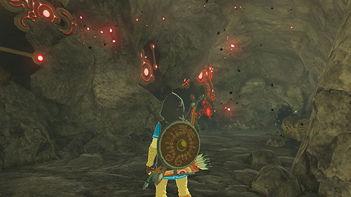
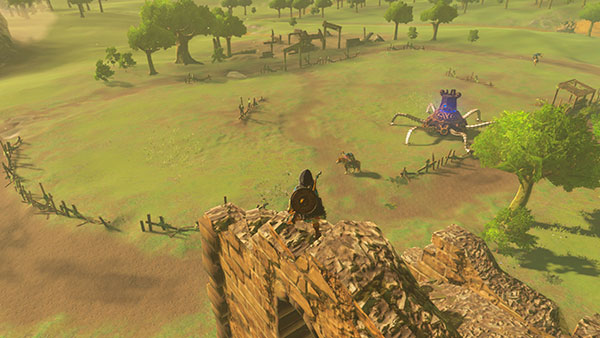

Satoru Takizawa, Diretor de Arte de The Legend of Zelda: Breath of the Wild postou recentemente screenshots do jogo. Aqui está a mensagem dele com um desafio para você. "Como diretor de arte do jogo, viajei por todo o mundo de The Legend of Zelda: Breath of the Wild. Enquanto explorava, descobri alguns locais que gostaria que você encontrasse. Você pode dizer onde eles estão?"
   